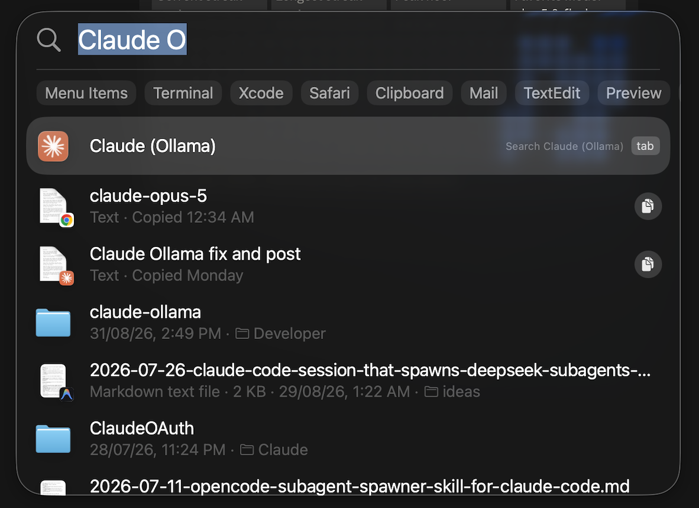
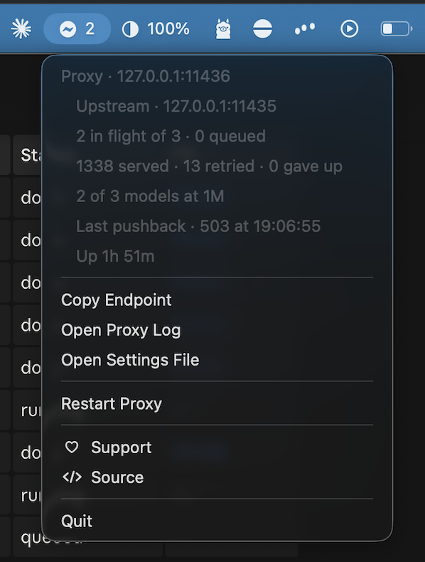
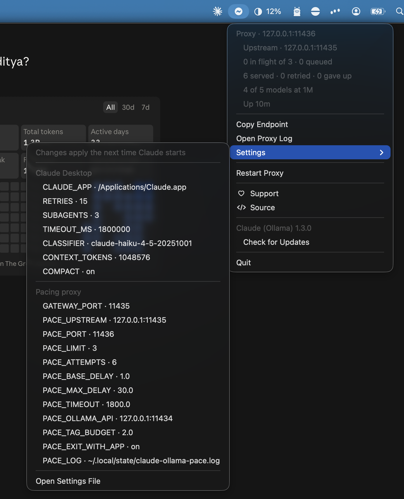
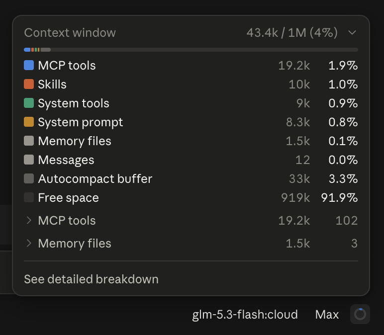

Claude Desktop, pointed at a local Ollama gateway, without editing anything the app owns.
brew install --cask aaditya-v-more/tap/claude-ollama
macOS 11 or newer. Assumes you already have Claude Desktop in
/Applications and Ollama serving its Claude-compatible
gateway on 127.0.0.1:11435. It installs neither.
Ollama's gateway is not on by default. In the Ollama app,
open Apps and turn Claude on. For cloud
models, sign in to Ollama and enable those as well — some need a paid
plan. Until that is done nothing is listening on
127.0.0.1:11435, and none of this will work.
Open Claude through this app, not Claude Desktop. Launching Claude directly skips the launcher, so nothing is pointed at the proxy and none of the overrides are set. Every launch has to go through Claude (Ollama).


A launcher that starts Claude Desktop with the retry, concurrency, timeout and context-window variables set for a small self-hosted endpoint. They are process environment only — quit the app and nothing remains.
A small HTTP proxy in front of the gateway that holds requests to a fixed number in flight, retries the ones upstream still rejects, and repairs two things the gateway gets wrong on the way through.
It stays alongside Claude while the app is open, showing the port the proxy settled on, how many requests are in flight against the limit, and how many the gateway has pushed back on. It can copy the endpoint, open the log, change any setting, and restart the proxy without restarting Claude. Both it and the proxy exit on their own once Claude quits.

Ollama Cloud serves a small fixed number of requests concurrently and
returns 529 for the overflow, with no Retry-After. Claude
Code cannot pace itself against that — it retries blindly until it runs
out of attempts. The proxy holds in-flight requests behind a semaphore,
so excess requests wait in line locally instead of being rejected
upstream, and retries anything that still comes back with a doubling
delay. A retry only ever happens before the first response byte, so a
partly streamed reply is never restarted.
Claude Desktop decides a model has a 1M window by matching
[1m] in the model ID, and the gateway never sets it — so
every model falls back to the 200k default regardless of what it can
actually do. Raising the context setting cannot fix this on its own: it
is ignored for any model whose name starts with claude-,
and every Ollama alias does. The proxy reads each model's real
context_length from Ollama's own API and tags the catalog
accordingly.

The app's setup probe joins its stored base URL with
/v1/models without trimming, asking for
//v1/models. The gateway's router is exact-match and 404s
it, which surfaces as "gateway returned no usable models" even when
inference works fine. The proxy collapses the path.
The app updates itself. While it is running it checks an appcast hourly, downloads anything newer in the background, and installs it when Claude quits. Nothing is swapped underneath a running session, nothing relaunches, and nothing asks. Updates are signed with an EdDSA key whose public half ships inside the app; anything that does not verify against it is refused.
Free, and staying that way — no licence to buy, no account to make, nothing measured and sent anywhere. If it saved you the trouble, there's a tip jar. Ollama moves its gateway around, Claude Desktop moves its own furniture every few weeks, and that's what the money is for.